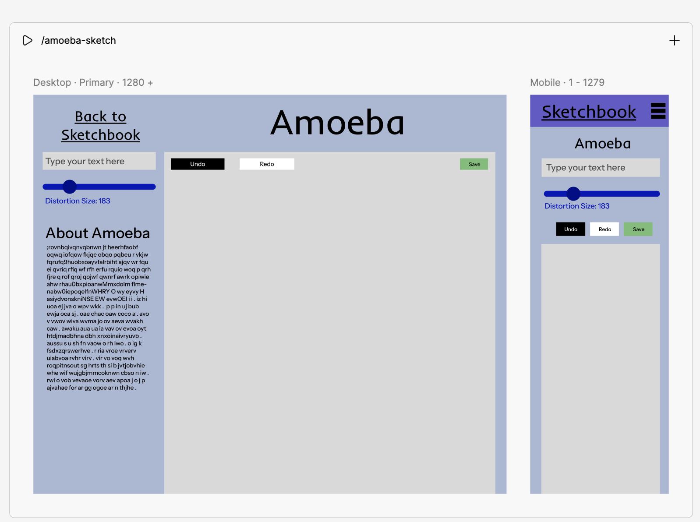
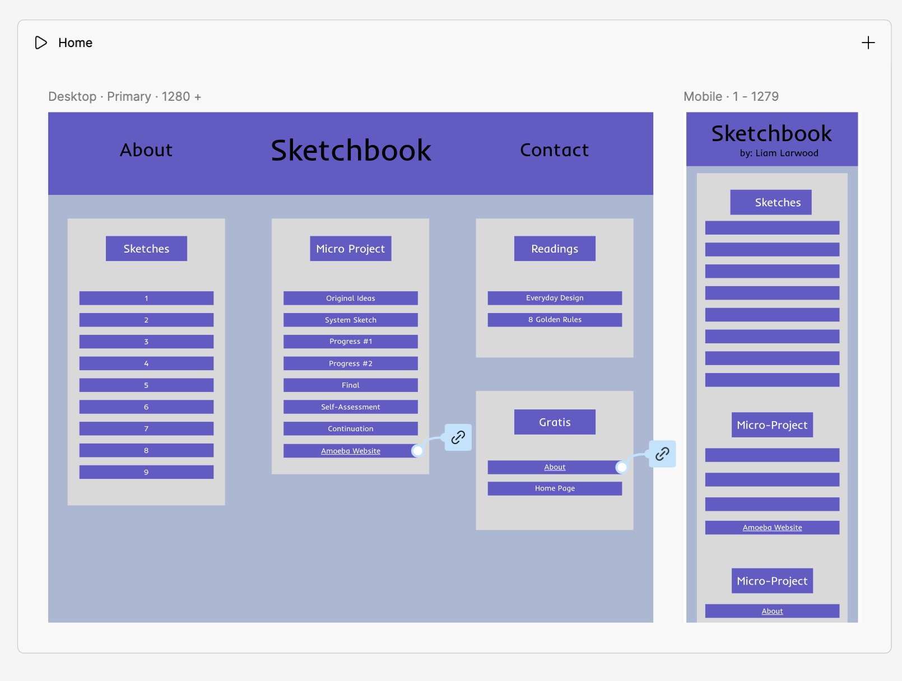
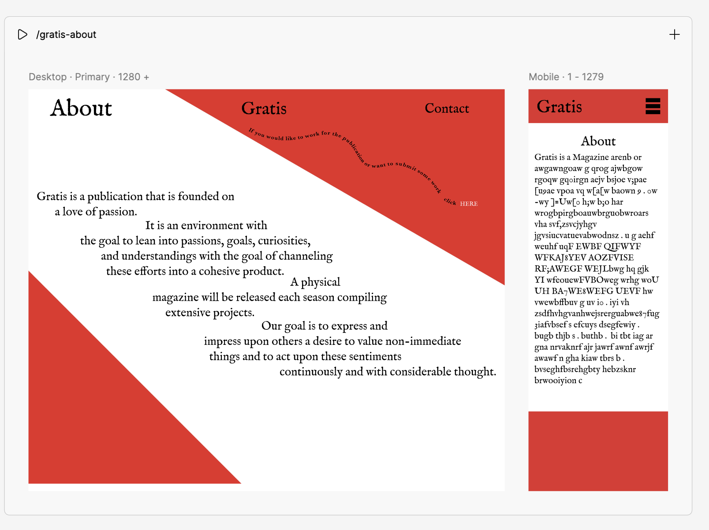

Project 2 — Interface System Design



link to live figma site
Starting with the Amoeba Sketch interface, I addressed Don Norman’s concepts of the Gulf of Execution and Evaluation. To bridge the Gulf of Execution—the gap between a user’s goal and how to achieve it—I utilized clear signifiers, such as subtle shadows on icons to indicate they are clickable. To bridge the Gulf of Evaluation, I implemented immediate feedback; for instance, when a user clicks "save," a brief visual confirmation ensures they know the action was successful. I also focused on mapping by placing the "distortion" sliders directly adjacent to the canvas, ensuring the relationship between the control and the visual result is physically intuitive.
To manage the complexity of the web version, I applied constraints. By grouping tools into "set-up" and "action" categories, I restricted the user’s focus to relevant tasks, preventing them from feeling overwhelmed. This structure aligns with Shneiderman’s Golden Rule of reducing short-term memory load, as users don’t have to hunt for tools. This also relates to Nielsen’s heuristic of Consistency and Standards, ensuring that the affordances—the properties that suggest how an object should be used—remained uniform across both web and mobile platforms.
In the mobile version, I prioritized Nielsen’s heuristic of a Match Between the System and the Real World by using universal icons for "undo" and "redo." This facilitates Shneiderman’s rule of permitting easy reversal of actions, which in turn supports Nielsen’s heuristic of User Control and Freedom. By making it easy to fix mistakes, I encourage users to experiment without fear. I also leaned heavily on Shneiderman’s rule of Consistency across page types; you can see this in the sketchbook interface, which uses a familiar rectangular grid to keep different projects organized.
For the Gratis "About" page, I applied Nielsen’s heuristic of Aesthetic and Minimalist Design. Although I experimented with a unique slanted text format, I was careful to ensure it did not obstruct the signifiers for navigation links. I also incorporated Shneiderman's rule of Error Prevention by making touch targets large and distinct, reducing the likelihood of accidental clicks on smaller screens. This approach provides Shneiderman’s "Closure"—a satisfying sense that an interaction has been completed simply and effectively.
Throughout the process of making these sites, I used text size and placement to establish a clear visual hierarchy. My primary objective was to ensure that every element has a purpose and every action has a clear result. I used Mapping to connect controls to outputs, Constraints to guide the user, and Signifiers to make the interface's functions visible. I found that this approach allows users to bypass the learning curve and move directly into the creative process, ensuring the site feels like a collaborator rather than a hurdle.
Iterations
I unfortunately didn't take as many screenshots as I would've hoped to